library(tidyverse)
library(srvyr)
library(flextable)
library(haven)
library(labelled)
library(huxtable)
library(here)
# Load data
# df2 <- readRDS(here::here("data", "synthetic_multicode_data.rds"))
df2 <- readRDS(here::here("data", "synthetic_bsa_clean.rds"))
df_svy <- df2 %>% as_survey_design(weights = WtFactor)
source(here::here("Scripts/colours.R"))
## Load functions from Descriptives project on GitHub
scripts <- jsonlite::fromJSON(
"https://api.github.com/repos/Joeacrowley/Descriptives/contents/Scripts"
)
r_scripts <- scripts$download_url[grepl("\\.R$", scripts$name, ignore.case = TRUE)]
quietly(lapply(r_scripts, source))
## function (...)
## capture_output(.f(...))
## <bytecode: 0x108b16408>
## <environment: 0x108b168d8>7 Bar chart functions
7.1 Philosophy
To arrive at a simple, usable piece of code, that is useful, as early as possible.
To write generic functions - not too bespoke to a given use-case.
Here, I initially wrote something tightly linked to the output format of calc_stats. It depended on column names and content more than it should have. I have now adjusted to make bar() more generic, taking any factor column as it’s x-axis and any numeric column as the y-axis, with labels simply fed as strings.
This can then be linked quite simply to the output of calc_stats, but is also useful on its own elsewhere.
7.1.1 Purpose
Take a dataframe with one categorical (ideally factor) variable to use as the x-axis and a second numeric variable to use as the y-axis and presents this nicely in a ggplot. Add variable labels as x- and y- axis titles, and allow a user defined plot title.
These plot values in a dataframe, they don’t calculate new statistics from a larger dataframe.
(data_frame <- calc_stats(
data = df2,
outcome ="skipmeal2",
statistics = "perc"
))| outcome | o_lab | o_cat | stat | estimate | estimate_se | unweighted_n | base | base_description | p_method | p_value | cross_break |
|---|---|---|---|---|---|---|---|---|---|---|---|
| skipmeal2 | How often do you or other members of your household skip a meal because there is not enough money for food?: SC B, C | skip, didn`t return SC questionnaire | perc | 0.454 | - | 1463 | 3224 | Total | |||
| skipmeal2 | How often do you or other members of your household skip a meal because there is not enough money for food?: SC B, C | Never | perc | 0.449 | - | 1448 | 3224 | Total | |||
| skipmeal2 | How often do you or other members of your household skip a meal because there is not enough money for food?: SC B, C | Rarely or sometimes | perc | 0.0462 | - | 149 | 3224 | Total | |||
| skipmeal2 | How often do you or other members of your household skip a meal because there is not enough money for food?: SC B, C | Often | perc | 0.0257 | - | 83 | 3224 | Total | |||
| skipmeal2 | How often do you or other members of your household skip a meal because there is not enough money for food?: SC B, C | DK/REF | perc | 0.0251 | - | 81 | 3224 | Total |
7.2 Functions
source(here::here("Scripts/bar_charts.R"))7.3 Examples
data_frame %>% glimpseRows: 5
Columns: 12
$ outcome <chr> "skipmeal2", "skipmeal2", "skipmeal2", "skipmeal2", "…
$ o_lab <chr> "How often do you or other members of your household …
$ o_cat <fct> "skip, didn`t return SC questionnaire", "Never", "Rar…
$ stat <chr> "perc", "perc", "perc", "perc", "perc"
$ estimate <dbl> 0.45378412, 0.44913151, 0.04621588, 0.02574442, 0.025…
$ estimate_se <chr> "-", "-", "-", "-", "-"
$ unweighted_n <int> 1463, 1448, 149, 83, 81
$ base <int> 3224, 3224, 3224, 3224, 3224
$ base_description <lgl> NA, NA, NA, NA, NA
$ p_method <lgl> NA, NA, NA, NA, NA
$ p_value <lgl> NA, NA, NA, NA, NA
$ cross_break <chr> "Total", "Total", "Total", "Total", "Total"bar(dat = data_frame %>% mutate(estimate = estimate * 100),
x = o_cat,
y = estimate,
fill = ncolours$blue2,
x_lab = data_frame$o_lab %>% unique,
y_lab = "%",
title = NULL)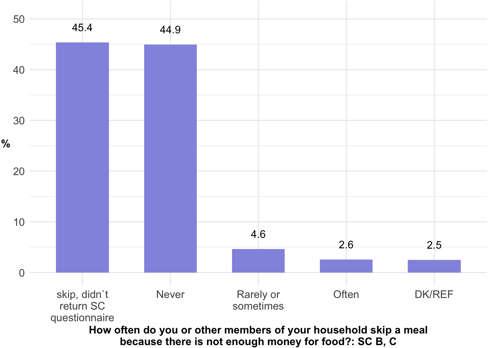
bar(dat = data_frame %>% mutate(estimate = estimate * 100),
x = o_cat,
y = estimate,
fill = ncolours$orange1,
x_lab = data_frame$o_lab %>% unique,
y_lab = "Percentage",
title = "Plot of sorts")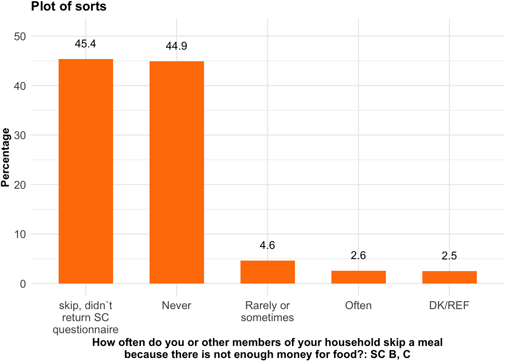
bar(dat = data_frame %>% mutate(estimate = estimate * 100),
x = o_cat,
y = estimate,
x_lab = data_frame$o_lab %>% unique,
y_lab = "Percentage - very long label text, arbitrarily added to test how this functions.")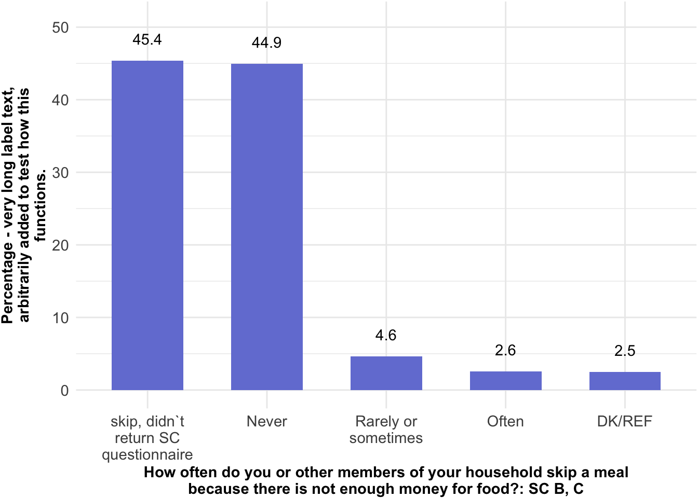
(data_frame2 <- calc_stats(
data = df2,
outcome ="libauth",
predictors = "RSex",
statistics = "mean"
)
)| cross_break | predictor1 | p_lab1 | p_cat1 | outcome | o_lab | o_cat | stat | estimate | estimate_se | base | base_description | unweighted_n | p_method | p_value |
|---|---|---|---|---|---|---|---|---|---|---|---|---|---|---|
| Total | Total | Total | Total | libauth | Libertarian-authoritarian scale (TradVals to censor) dv | mean | mean | 3.53 | - | 2602 | 2602 | |||
| RSex | RSex | Sex of respondent | Male | libauth | Libertarian-authoritarian scale (TradVals to censor) dv | mean | mean | 3.55 | - | 1217 | 1217 | |||
| RSex | RSex | Sex of respondent | Female | libauth | Libertarian-authoritarian scale (TradVals to censor) dv | mean | mean | 3.52 | - | 1385 | 1385 |
data_frame2 %>% glimpseRows: 3
Columns: 15
$ cross_break <chr> "Total", "RSex", "RSex"
$ predictor1 <chr> "Total", "RSex", "RSex"
$ p_lab1 <chr> "Total", "Sex of respondent", "Sex of respondent"
$ p_cat1 <chr> "Total", "Male", "Female"
$ outcome <chr> "libauth", "libauth", "libauth"
$ o_lab <chr> "Libertarian-authoritarian scale (TradVals to censor)…
$ o_cat <chr> "mean", "mean", "mean"
$ stat <chr> "mean", "mean", "mean"
$ estimate <dbl> 3.534089, 3.545330, 3.524212
$ estimate_se <chr> "-", "-", "-"
$ base <int> 2602, 1217, 1385
$ base_description <lgl> NA, NA, NA
$ unweighted_n <int> 2602, 1217, 1385
$ p_method <lgl> NA, NA, NA
$ p_value <lgl> NA, NA, NAbar(dat = data_frame2,
x = p_cat1,
y = estimate,
x_lab = "Sex",
y_lab = "Mean",
title = "Libertarian authoritarian scale") 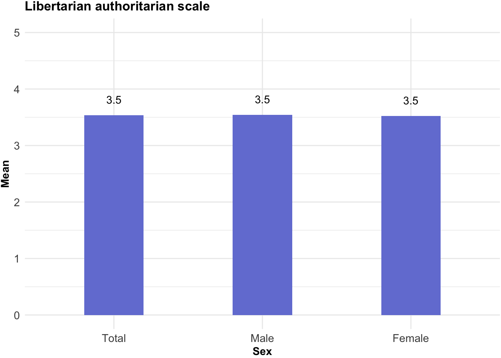
glimpse(df2)Rows: 3,224
Columns: 13
$ RAgeCat <fct> 65+, 65+, 25-34, 25-34, 35-44, 35-44, 35-44, 45-54, 35-44, 6…
$ RSex <fct> Female, Female, Female, Female, Female, Male, Male, Female, …
$ skipmeal <fct> "skip, didn`t return SC questionnaire", "skip, didn`t return…
$ leftrigh <dbl> NA, NA, 2.0, 1.2, 1.8, 2.2, 1.6, 3.4, 3.2, 1.6, 2.2, 2.4, 2.…
$ welfare2 <dbl> NA, NA, 3.500000, 3.000000, 2.750000, 2.125000, 2.375000, 2.…
$ libauth <dbl> NA, NA, 3.500000, 2.500000, 3.500000, 3.000000, 3.000000, 4.…
$ MuchPov <fct> "or, that there is quite a lot?", "or, that there is quite a…
$ WtFactor <dbl> 1.2433783, 1.5697561, 1.1597267, 0.5117533, 1.0210852, 1.454…
$ skipmeal2 <fct> "skip, didn`t return SC questionnaire", "skip, didn`t return…
$ MuchPov2 <fct> "or, that there is quite a lot?", "or, that there is quite a…
$ libauth2 <fct> NA, NA, 2.5 to 3.5, 2.5 to 3.5, 2.5 to 3.5, 2.5 to 3.5, 2.5 …
$ leftrigh2 <fct> NA, NA, Up to 2.5, Up to 2.5, Up to 2.5, Up to 2.5, Up to 2.…
$ welfare3 <fct> NA, NA, 2.5 to 3.5, 2.5 to 3.5, 2.5 to 3.5, Up to 2.5, Up to…data_frame3 <- calc_stats(
data = df2, outcomes = "welfare3", predictors = c("RSex"), statistics = "perc"
) %>%
mutate(estimate = round(estimate * 100,1))
data_frame3| cross_break | predictor1 | p_lab1 | p_cat1 | outcome | o_lab | o_cat | stat | estimate | estimate_se | unweighted_n | base | base_description | p_method | p_value |
|---|---|---|---|---|---|---|---|---|---|---|---|---|---|---|
| Total | Total | Total | Total | welfare3 | Left-right scale | Up to 2.5 | perc | 31.8 | - | 828 | 2603 | |||
| Total | Total | Total | Total | welfare3 | Left-right scale | 2.5 to 3.5 | perc | 60 | - | 1562 | 2603 | |||
| Total | Total | Total | Total | welfare3 | Left-right scale | More than 3.5 | perc | 8.2 | - | 213 | 2603 | |||
| RSex | RSex | Sex of respondent | Male | welfare3 | Left-right scale | Up to 2.5 | perc | 32.6 | - | 397 | 1217 | |||
| RSex | RSex | Sex of respondent | Male | welfare3 | Left-right scale | 2.5 to 3.5 | perc | 58.8 | - | 715 | 1217 | |||
| RSex | RSex | Sex of respondent | Male | welfare3 | Left-right scale | More than 3.5 | perc | 8.6 | - | 105 | 1217 | |||
| RSex | RSex | Sex of respondent | Female | welfare3 | Left-right scale | Up to 2.5 | perc | 31.1 | - | 431 | 1386 | |||
| RSex | RSex | Sex of respondent | Female | welfare3 | Left-right scale | 2.5 to 3.5 | perc | 61.1 | - | 847 | 1386 | |||
| RSex | RSex | Sex of respondent | Female | welfare3 | Left-right scale | More than 3.5 | perc | 7.8 | - | 108 | 1386 |
bar_clustered(
dat = data_frame3,
x = "o_cat",
fill = "p_cat1",
y = "estimate",
x_lab = data_frame3$o_lab %>% unique,
y_lab = "%",
fill_lab = data_frame3$p_lab1 %>% unique %>% grep("Total", ., value = T, invert = T),
title = "Left right scale, crosstabulated by sex"
)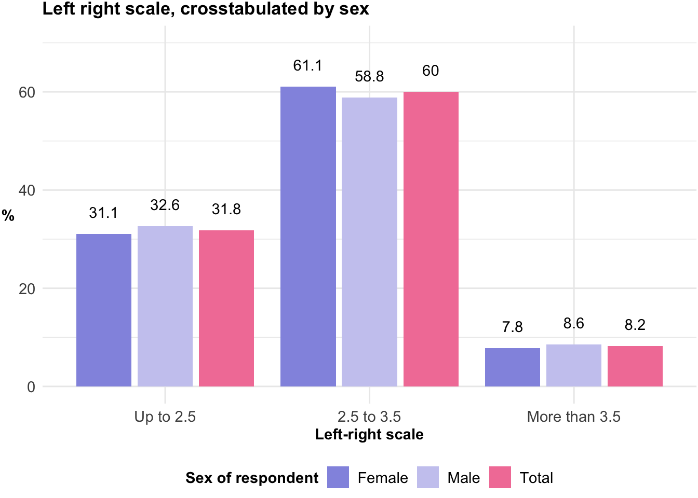
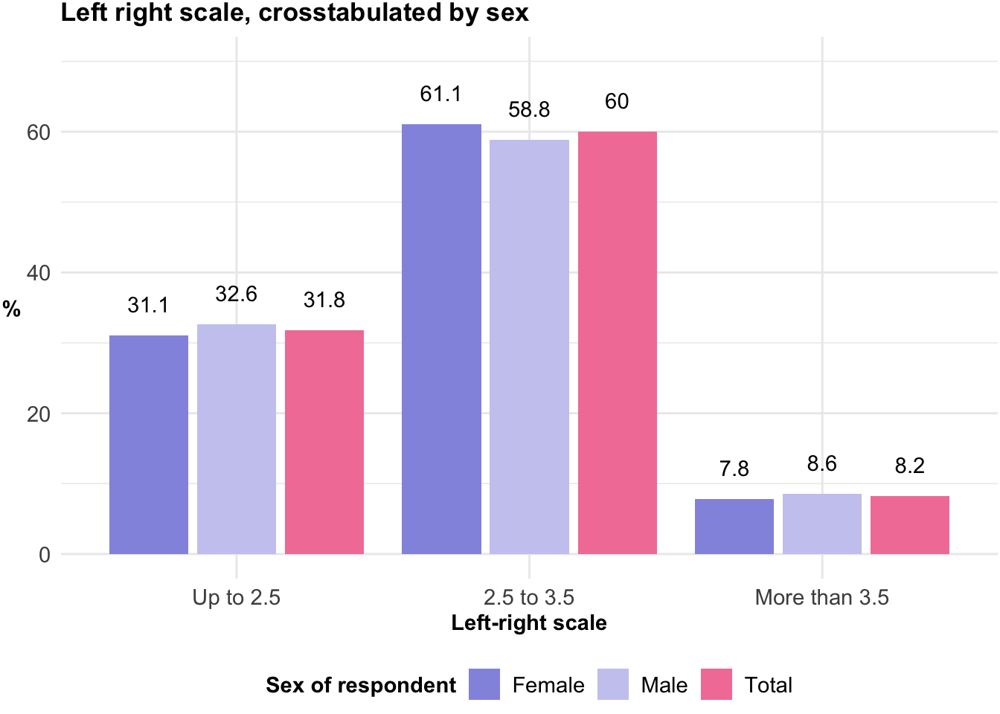
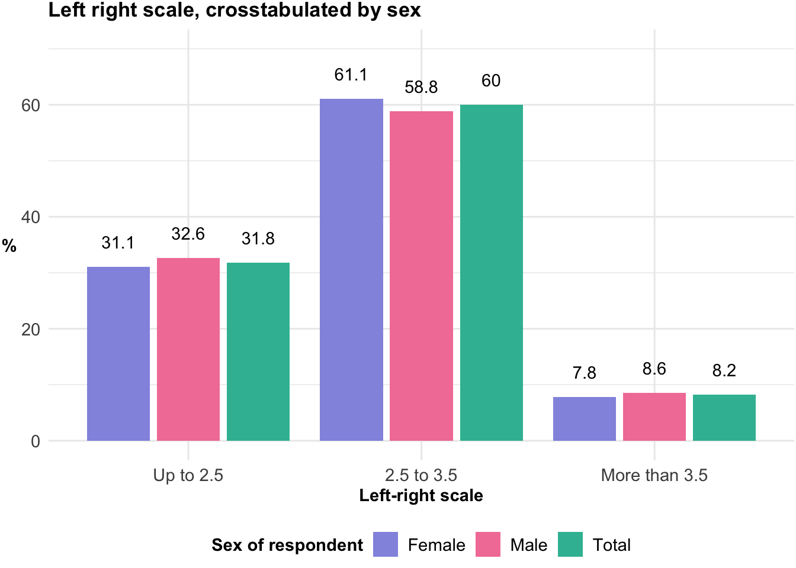
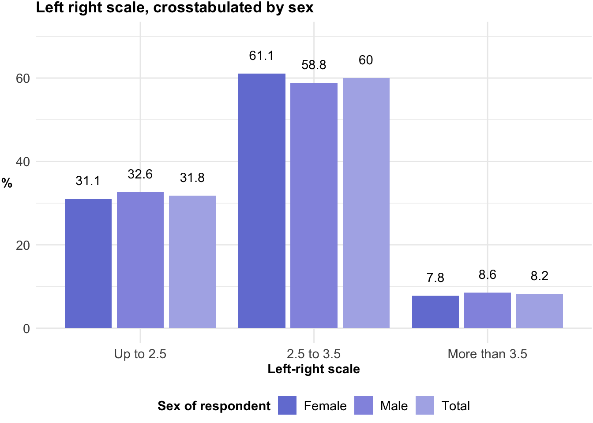
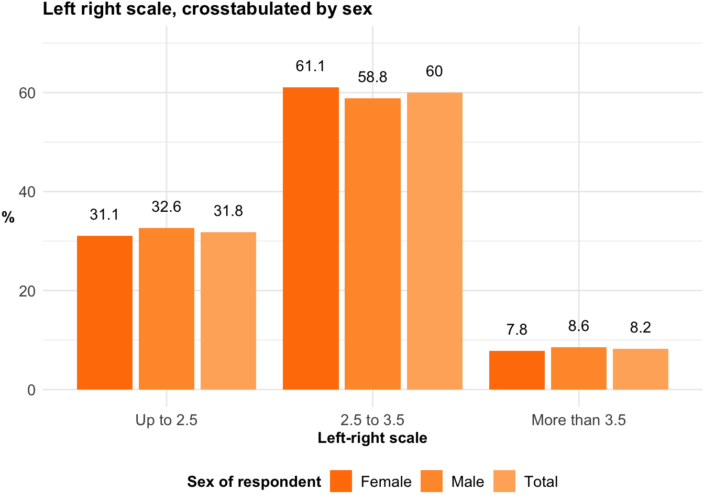
bar_stacked(
dat = data_frame3,
x = "p_cat1",
fill = "o_cat",
y = "estimate",
x_lab = data_frame3$p_lab1 %>% unique %>% grep("Total", ., value = T, invert = T),
y_lab = "%",
fill_lab = data_frame3$o_lab %>% unique,
title = "Left right scale, crosstabulated by sex",
title_size = 14,
legend_position = "bottom"
)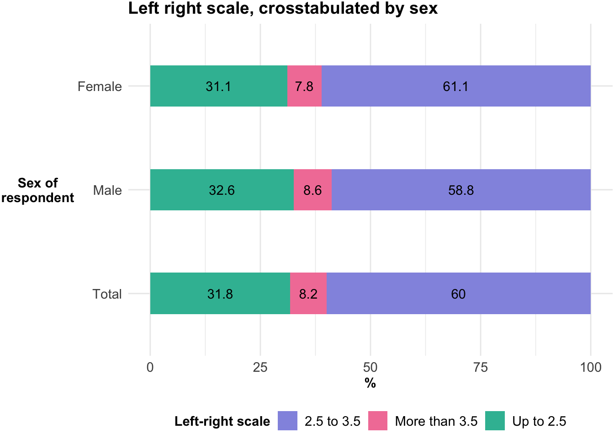
Best for long response labels — each label gets the full legend column width.
bar_stacked(
dat = data_frame3,
x = "p_cat1",
fill = "o_cat",
y = "estimate",
x_lab = data_frame3$p_lab1 %>% unique %>% grep("Total", ., value = T, invert = T),
y_lab = "%",
fill_lab = NULL,
title = "Left right scale, crosstabulated by sex",
title_size = 14,
legend_position = "right"
)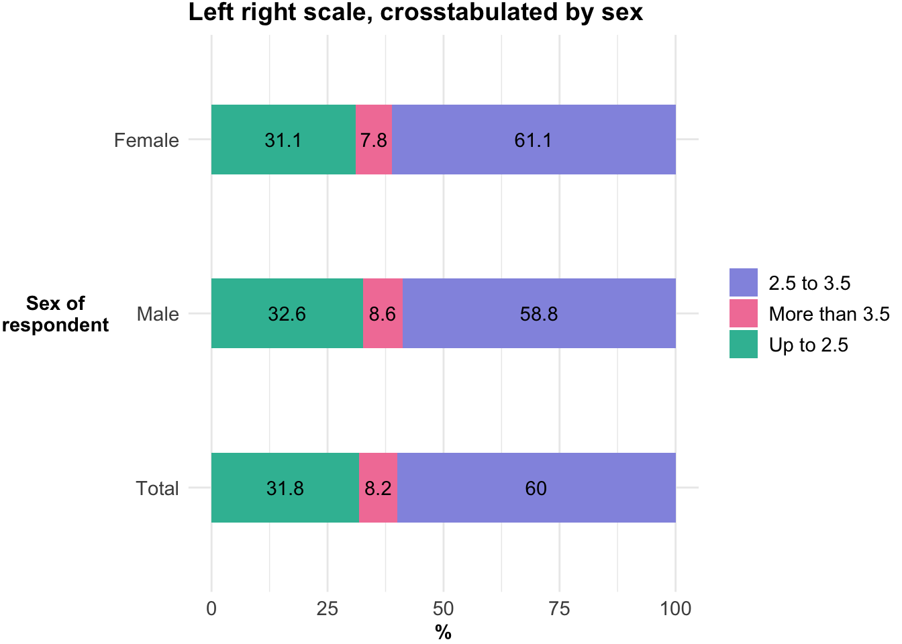